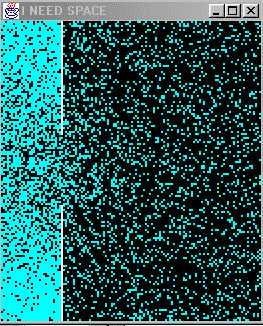
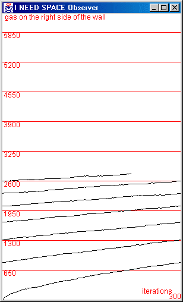

Figure 8. PV = nRT

This simulation is a copy of the StarLogo team's Molecules project:
This project presents a (highly simplified) model of gas molecules in a box. The box is divided into two sections with a small hole between the two sections.
You can choose the number of molecule and it is also possible to choose the size of the hole (in the properties box of the Launcher, GasExperiment).
For this simulation, we just have created a kind of Turtle Gas with a single behavior: look for free space. A special Observer GasObserver observes and displays the number of turtles that are on the right side of the wall.
Figure 9. The curve will stabilize when molecules will be proportionally distributed
